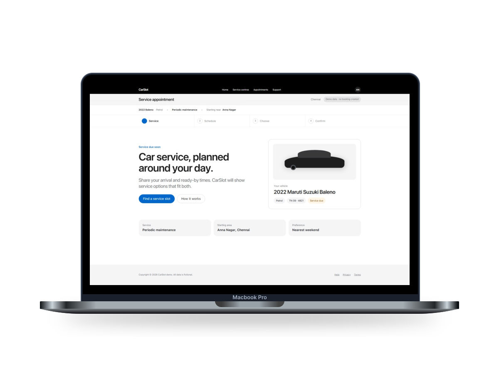
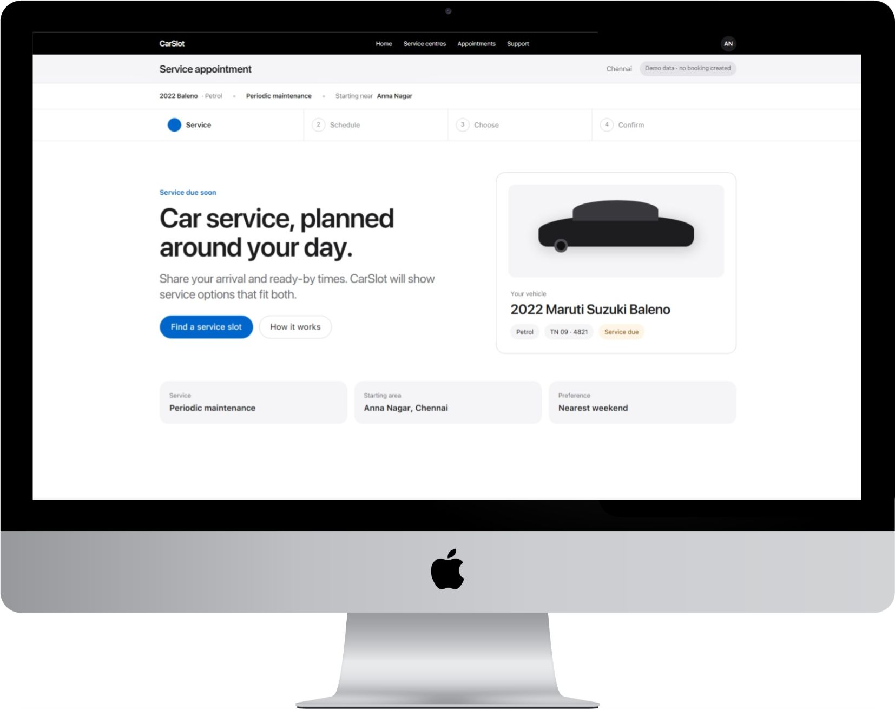
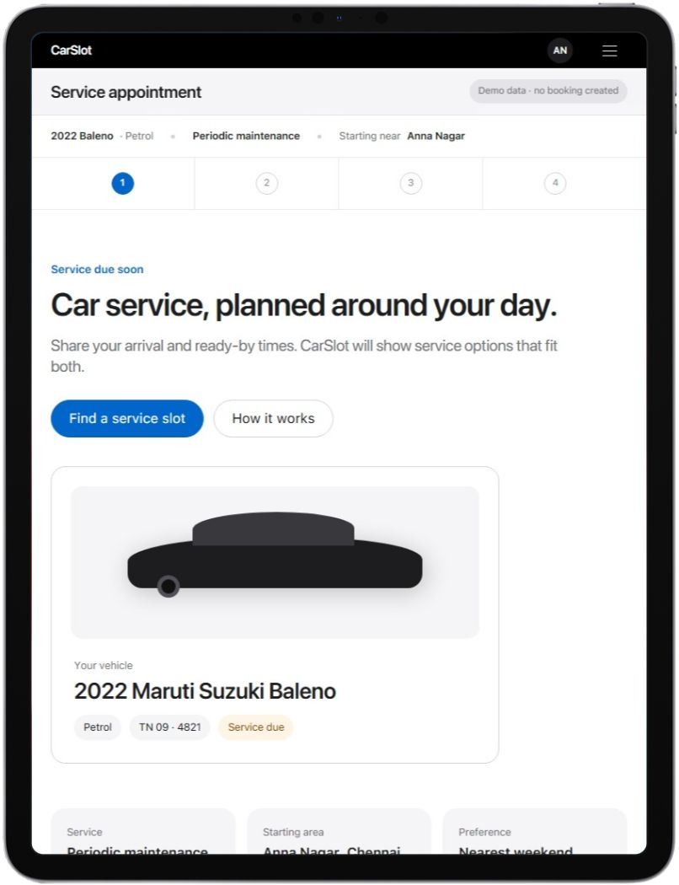

GoMechanic
Marketplace and service packages.
A constraint-first booking concept that helps schedule-conscious car owners compare eligible service options—and understand whether an appointment is available, held, pending, or confirmed.
Concept and delivery study · Chennai Metropolitan Area · Evidence-aware documentation · The prototype uses simulated data and is not a live booking service.

The brief described a marketplace where appointments are difficult to compare, popular slots disappear quickly, and a booking request can feel indistinguishable from a confirmed reservation. The design response centers the owner’s actual timing constraints before presenting service options.
No interviews, surveys, diary studies, or participant usability sessions were supplied. Personas and pain points are document-based hypotheses, clearly marked as unvalidated. Delivery facts describe the design work—not product adoption, conversion, or post-launch impact.
Understand the booking problem, the market signals, and the customer constraints—while keeping assumptions visible.
It was: help a time-constrained owner find an eligible appointment, make the tradeoffs understandable, and never overstate certainty.
Express an arrival window, a completion deadline, location flexibility, pickup preference, centre type, expertise, rating, and price sensitivity without starting over each time.
Read requirements analysis ↗Fragmented booking + unavailable popular slots + unclear alternatives + ambiguity between a request and a confirmation.
Five representative services were compared for booking language, pickup and drop, availability signals, trust claims, and the point at which a request becomes a real appointment.
Marketplace and service packages.
Multi-brand network and service booking.
Workshop discovery and doorstep service.
OEM-owned service journey.
Brand-specific booking experience.
Digital initiation is now expected, but commitment models vary.
Established patternFrequently offered; coverage and timing terms are not always obvious.
Common featureWidely claimed, but the operational meaning differs by service.
Variable meaningCommon language; public evidence rarely establishes freshness.
Verify freshnessA request can be presented with the visual confidence of a guarantee.
Design opportunityNeeds service on Friday or Saturday—or completion before travel—and wants to compare the practical tradeoffs without calling multiple centres.
Discovery, eligibility, and confirmation blur into one moment.
Moderate supportA slot is only meaningful when the workshop can actually deliver it.
Moderate supportApprovals and evidence can fragment across calls and chat.
Moderate supportPickup and handover require understandable control records.
Weak supportVerified quality and paid visibility are difficult to interpret.
Weak supportTurn scattered business needs into a primary problem, prioritized opportunities, and a deliberately bounded concept.
Schedule-constrained owners cannot reliably find and secure a suitable service appointment.
P-01 · Primary problem statementFind and secure an appointment that respects real timing needs.
Translate complex workshop availability into dependable options.
Make additional-work evidence and approval auditable.
Build control into pickup, handover, and return.
Keep trust signals and paid visibility understandable.
The concept focuses on the owner’s service constraints, honest availability language, and the capacity response needed to support both.
Structure the journey, make every certainty state explicit, and translate it into responsive interface behavior.
This is a journey architecture—not a future-platform sitemap. Progressive disclosure keeps the constraint and status context close to every decision.
The primary path carries a visible certainty state. The recovery branch changes only the constraints the owner is willing to adjust.
Each screen answers a distinct question: what is needed, what is eligible, what can change, and what is actually secured.
Open the full wireframe artifact ↗
The product interface uses a neutral, familiar shell. Blue is reserved for action and selection; green, amber, and red communicate outcome states with supporting text rather than color alone.

Responsive behavior, keyboard navigation, visible focus, semantic structure, text-supported statuses, and motion preferences are treated as core behavior.
Fluid type, concise labels, strong contrast, and logical headings.
Visible focus and reachable navigation, filters, and prototype links.
Every availability and commitment state has explicit language.
Slow decorative animation stops when reduced motion is preferred.
Bring the nine-state journey into a responsive prototype, verify the documentation, and preserve every unresolved production dependency.
Desktop creates comparison space. Tablet and mobile preserve the sequence, state language, and decision context without compressing away the important distinctions.

Each phase was reviewed before the next began. Approval confirms documentation readiness for the following phase; it does not imply market validation or production authorization.
Evidence boundaries, landscape, persona, and pains prepared for definition.
Primary problem, opportunities, features, and concept boundary established.
IA, flow, wireframes, visual system, and prototype were review-ready.
Responsive prototype, specification, handoff, and residual risks documented.
Nine connected states cover constraint setting, eligibility, comparison, recovery, hold meaning, and the final outcome.
Available, held, pending, requested, confirmed, and released are treated as different product states.
Responsive behavior, specifications, accessibility foundations, and handoff considerations are documented.
These are design-delivery outcomes. There is no post-launch evidence for adoption, satisfaction, conversion, or operational performance.
Rules for freshness, expiration, overbooking, and partner response remain open.
Cancellation, refund, monetization, ranking, and sponsorship policies need definition.
APIs, contracts, identity, inventory, notifications, and error recovery are unresolved.
Consent, retention, custody evidence, and threat modeling require specialist review.
A target standard, assistive-technology testing, and localization plan are still needed.
Analytics, hosting, monitoring, support, and service-level ownership are not authorized.
Browse the evidence, decisions, interface artifacts, product package, and phase reviews. Each item opens the original source in a new tab.
Download the visual system, narrative structure, component rules, motion guidance, and responsive behavior as a reusable Markdown design file.
Scope, actors, business rules, dependencies, and uncertainties.
EvidenceMarkdown ↗ Discover · 02What is known, unknown, assumed, and still needs research.
EvidenceMarkdown ↗ Discover · 03Selection rationale and public experience coverage.
ResearchMarkdown ↗ Discover · 04Patterns, gaps, differentiators, and confidence limits.
ResearchMarkdown ↗ Discover · 05Constraint-based provisional customer profiles and evidence limits.
SynthesisMarkdown ↗ Discover · 06Five problem themes mapped to source strength and open questions.
SynthesisMarkdown ↗ Define · 01Primary owner problem and connected operational problems.
DecisionMarkdown ↗ Define · 02Six opportunity spaces tied to the problem system.
DecisionMarkdown ↗ Define · 03Seven candidate capabilities prioritized by value and dependency.
PlanningMarkdown ↗ Define · 04The core journey, explicit exclusions, and success boundary.
DecisionMarkdown ↗ Develop · 01Journey structure, terminology, status model, and responsive rules.
InteractiveHTML ↗ Develop · 02Primary path, critical branches, required states, and trace coverage.
InteractiveHTML ↗ Develop · 03Nine structural states for constraints, options, certainty, and recovery.
InteractiveHTML ↗ Develop · 04Applied product hierarchy, interface states, and visual language.
InteractiveHTML ↗ Develop · 05Readiness review, accessibility foundations, and unresolved issues.
ReportHTML ↗ Deliver · 01Phase-four implementation of the approved nine-state journey.
InteractiveHTML ↗ Deliver · 02Layout, component, state, content, and responsive specifications.
SpecificationHTML ↗ Deliver · 03Build priorities, acceptance notes, and unknowns to preserve.
HandoffHTML ↗ Deliver · 04Final readiness, consistency, and residual-risk assessment.
ReportHTML ↗ Product · 01The refined, interactive CarSlot appointment experience.
InteractiveHTML ↗ Product · 02Rationale for the final shell, states, data honesty, and visual system.
DecisionMarkdown ↗ Product · 03Detailed behavior and component reference for the refined prototype.
SpecificationHTML ↗ Product · 04Verification of coverage, responsiveness, states, and known limits.
ReportHTML ↗ Review · D1Approval record authorizing the Definition phase.
ReviewMarkdown ↗ Review · D2Approval record authorizing the Development phase.
ReviewMarkdown ↗ Review · D3Approval record authorizing the Delivery phase.
ReviewMarkdown ↗ Review · D4Final completion record with deployment still unauthorized.
ReviewMarkdown ↗Walk through the nine-state appointment journey in a separate screen. The prototype is a design artifact with simulated data—not a live service.
Open final prototype in a new tab ↗